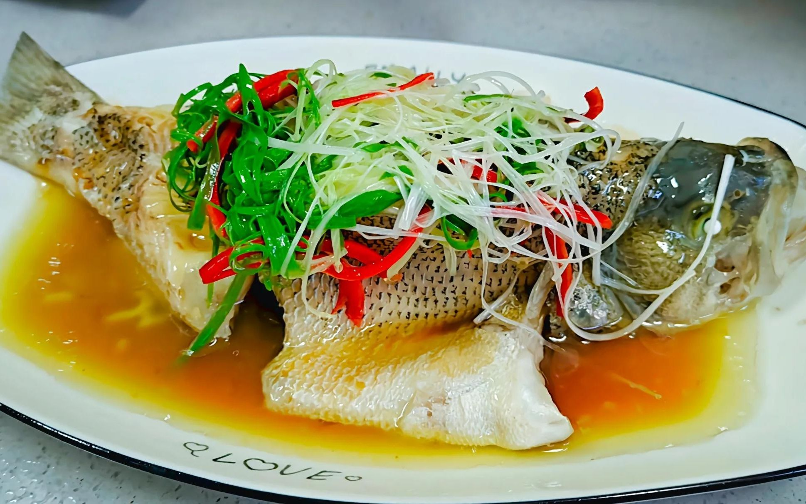

首页
清蒸鲈鱼

描述
清蒸鲈鱼是传统名菜，属粤菜和上海菜。
以鲈鱼为主料，配以葱、姜、蒸鱼豉油等辅料蒸制而成，具有肉质细嫩爽滑、口味咸鲜清淡的特点
配料
步骤
- 鲈鱼处理好后洗净，用厨房纸擦干，两面分别划几刀，并用少许盐抹遍鱼身的内外，腌制10分钟以上(盐宜少不宜多，最后要浇蒸鱼豉油)
- 鱼肚内塞上姜和蒜，鱼身也撒上姜蒜，并到上少许料酒，大火烧开后入锅蒸10分钟左右，关火后再虚蒸5分钟。
- 蒸好的鱼，去除姜和蒜，并把盘内的汤汁倒掉。
- 鱼身重新撒上姜蒜丝，浇上一勺烧热的猪油。
- 上桌前再浇上蒸鱼豉油，清蒸鲈鱼就做好了